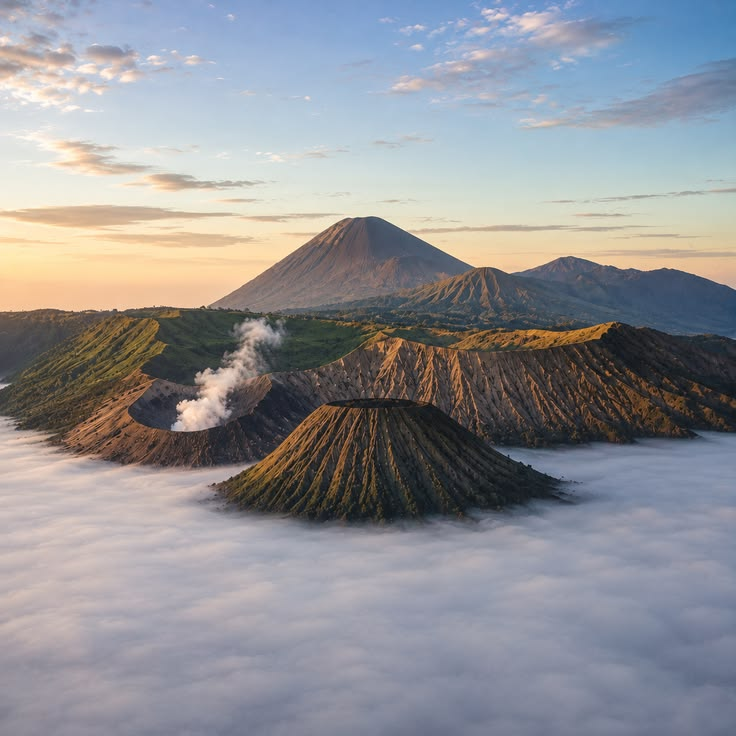
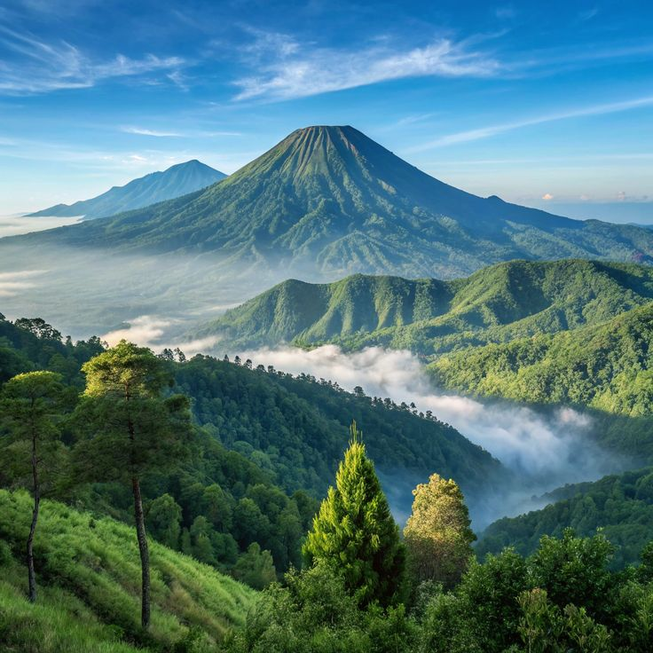
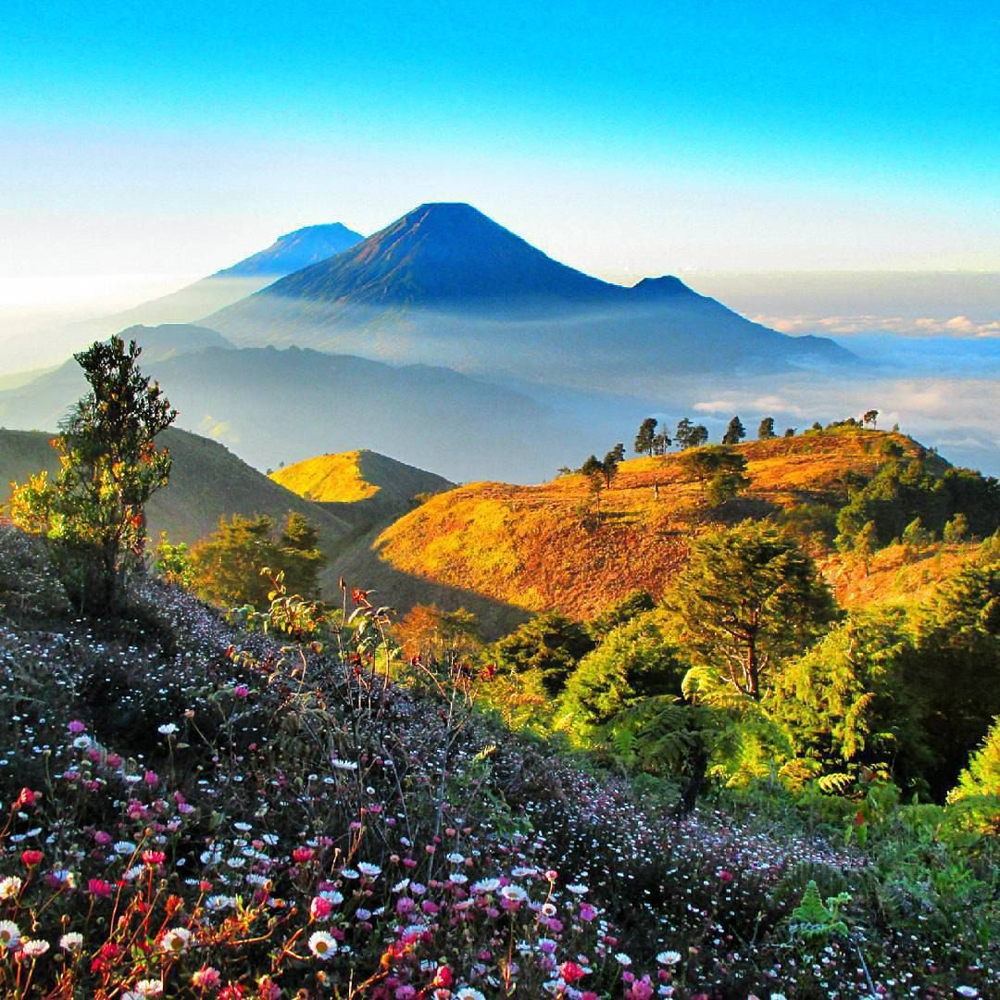

Nama Gunung
Lokasi
0 mdpl
Kesulitan
Daya Tarik Alam
Deskripsi alam...
Mitos & Legenda
Deskripsi mitos...
Temukan simfoni pemandangan megah di atas awan, keanekaragaman hayati purba, serta bisikan legenda mistik yang menyelimuti puncak-puncak Indonesia.
Dari samudra awan hingga danau kawah berusia jutaan tahun, rasakan pesona lanskap pegunungan Indonesia yang tiada tanding.

Terkenal dengan hamparan laut pasir kaldera seluas 10 km², kawah aktif yang terus mengepulkan asap, dan pemandangan sunrise dramatis dari Penanjakan.

Rumah bagi Danau Segara Anak yang membiru memikat, sabana Sembalun yang membentang luas, serta anak gunung Barujari di tengah kawah.

Favorit para pendaki pemula hingga profesional, menawarkan lanskap puncak berbentuk bukit Teletubbies dan siluet gagah Sindoro-Sumbing.
Di balik kemegahan puncaknya, gunung-gunung Indonesia menyimpan rahasia spiritual, ritual adat, dan tuturan leluhur yang tetap dihormati hingga kini.
Di sekitar pos Hargo Dumilah, banyak pendaki mengaku mendengar keramaian layaknya pasar tradisional di tengah malam hampa, lengkap dengan transaksi gaib barter koin.
Masyarakat lokal meyakini puncak Keraton Merapi dihuni oleh bangsa halus dengan strata sosial kerajaan, dipimpin oleh sosok Kyai Sapu Jagad yang menjaga kawah.
Danau Segara Anak dipercaya dikuasai oleh Dewi Anjani, dewi bertubuh indah yang mengayomi seluruh makhluk di kawasan Lombok dan menjaga keasrian kawah.
Dikenal memiliki anomali magnetik dan cuaca yang cepat berubah, Gunung Salak kaya akan kisah jeritan gaib di Puncak Manik dan kampung gaib di tebing terjal.
Legenda manusia harimau (Cindaku) penjaga kelestarian hutan Sumatra, yang diyakini akan menampakkan diri jika ada manusia yang merusak alam Kerinci.
Mitos dilarang menengok ke belakang saat melintasi Tanjakan Cinta, serta arca kembar Arcopodo di jalur puncak yang terkadang memudar dari pandangan mata.
Pilih kategori yang sesuai dengan gaya petualanganmu, dari trek santai keluarga hingga ekpedisi ekstrem.
Jawab 3 pertanyaan singkat ini untuk menemukan destinasi gunung yang paling selaras dengan jiwa petualangmu!
Kamu adalah pencari keindahan sejati! Gunung Prau cocok untukmu karena menyajikan panorama lautan awan terindah tanpa medan yang menuntut fisik terlalu keras.